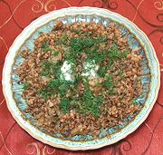

|
Buckwheat Kasha w/ MushroomsRussia - Grechnevaya Kasha | ||||
| Makes: Effort: Sched: DoAhead: |
5 side ** 50 min Yes |
This recipe makes a simple but very flavorful Breakfast for three, Side Dish with meats for five, or Lenten / Vegetarian main dish for two. See also Variations. | |||
|
1 4 4 2 1/2 1/2 2/3 ------ Lots 1/3 ------ |
c oz oz c T T t --- t --- |
Buckwheat (1) Onion Mushrooms (2) Broth (3) Oil (4) Oil (more) Salt -- Finish Butter, melted (5) Pepper -- Garnish Dill and/or Parsley |
This is entirely a stovetop recipe in keeping with Southern Californian practice, as we don't often have hot ashes in our kitchens. Prep - (7 min - exclusive of toasting Buckwheat (if needed))
|